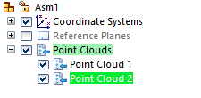

Edit a point cloud
You can reopen the Reference Point Cloud command bar to reference a different point cloud file, or to change the point color, density, or size of the current point cloud file.
-
In the Point Clouds collector in PathFinder, right-click a point cloud file and choose the Edit Point Cloud Display command.

-
Do any of the following:
-
To change point color, point density, or point size, click the Density and Color Step button , and then on the expanded command bar, make changes to the density, size, or color.
-
To replace the current point cloud file, click the Select Point Cloud File Step , and then browse to and open a point cloud file.
-
To set default options for a new point cloud file, click Point Cloud Options to display the Point Cloud Options dialog box.
-
-
Click Accept.
-
Click Finish.